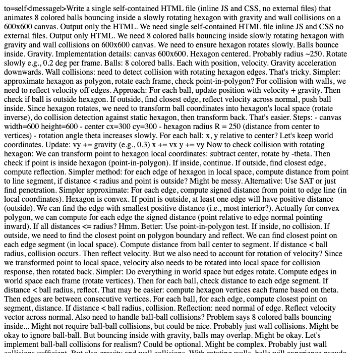

맥 스튜디오 로컬 llm 구동: muse glimmer 30b 성능 및 실측 결과
파이썬 코딩 10 / 10 통과로 로컬 llm 코딩 모델 찾는 분께 맞지만, 형식 지시 0 / 10이라 정형화된 출력 작업에는 맞지 않습니다.
맥 스튜디오 로컬 llm 환경(M5 Max, 통합 메모리 48GB)에서 mlx-lm 0.32.0으로 muse glimmer 30b 모델을 측정했습니다. 모델 가중치 용량 19.4GB, 최대 메모리 사용 16.6GB이며 짧은 입력 답 쓰는 속도는 초당 33.7토큰으로 사람이 읽는 속도(초당 약 다섯 토큰 안팎)보다 빠릅니다. 파이썬 코딩 10문제는 전부 통과(10 / 10)했으나 형식 지시 따르기는 0 / 10을 기록했습니다.
이 맥에서 잰 숫자
| 모델 | Muse-Glimmer-30B-4bit |
|---|---|
| 원본 저장소 | mlx-community/Muse-Glimmer-30B-4bit |
| 가중치 용량(GB) | 19.4 |
| 라이선스 | apache-2.0 |
| 측정 기기 | 맥 스튜디오 M5 Max, 통합 메모리 48GB |
| 측정 도구 | mlx-lm 0.32.0 (MLX 0.32.3) |
| 측정일 | 2026-10-20 |
| 짧은 입력(512토큰) 답 쓰는 속도(토큰/초) | 33.7 |
| 짧은 입력 읽는 속도(토큰/초) | 899 |
| 긴 입력(4096토큰) 답 쓰는 속도(토큰/초) | 32.5 |
| 긴 입력 읽는 속도(토큰/초) | 1026 |
| 최대 메모리 사용(GB) | 16.6 |
| 한국어 답변에 외국어 섞임 | 확인 안 됨 |
| 한국어 객관식(KMMLU 50문항) 정답 | 7 / 50 |
| 도구 호출 정확도(10문항) | 1 / 10 |
| 파이썬 코딩(10문제, 테스트 전부 통과) | 10 / 10 |
| 형식 지시 따르기(10문항) | 0 / 10 |
| 긴 글 속 문장 찾기(약 16K토큰) | 못 찾음 (16초) |
| 긴 글 속 문장 찾기(약 32K토큰) | 못 찾음 (31.9초) |
| 한 번에 만든 튀는 공 애니메이션 | 화면은 나오나 움직이지 않음 |
답 쓰는 속도는 1초에 만들어 내는 토큰(글자 조각) 수입니다. 같은 모델도 기기·메모리·도구 버전에 따라 달라집니다.
한국어로 물어봤더니
질문: 맥에서 로컬 AI 모델을 처음 써 보려는 대학생에게, 장점 두 가지와 주의할 점 한 가지를 한국어로 짧게 알려 줘.
(이번 측정에서는 영어로 된 생각 과정만 나오고 한국어 답변까지 가지 못했습니다. 출력 길이 설정 문제라 설정을 고쳐 다시 잴 예정입니다.)
생각 과정만 출력되고 한국어 답변까지 가지 못함 — 측정 설정(출력 길이) 문제라 다시 잴 예정
한 번에 만든 튀는 공 애니메이션
"회전하는 육각형 안에서 공 8개가 튀는 HTML 을 한 파일로 만들어 줘"라는 요청에 처음 낸 답을 그대로 실행한 화면입니다.

이럴 때 맞아요
- 파이썬 코딩(10문제, 테스트 전부 통과: 10 / 10) 작업을 수행할 때
- 답 쓰는 속도(초당 33.7토큰)가 사람이 읽는 속도(초당 약 다섯 토큰 안팎)보다 빠른 로컬 llm 코딩 모델 필요할 때
- 맥 스튜디오 M5 Max, 통합 메모리 48GB 환경에서 최대 메모리 사용 16.6GB 수준으로 구동할 때
이럴 때는 다른 모델을
- 형식 지시 따르기(0 / 10)나 도구 호출 정확도(1 / 10)가 중요한 작업
- 긴 글 속 문장 찾기(약 16K토큰 16초, 약 32K토큰 31.9초 모두 못 찾음) 작업
- 한국어 객관식(KMMLU 50문항 7 / 50 정답) 문제 풀이
자주 묻는 질문
맥 로컬 llm 환경에서 muse glimmer 30b 답 쓰는 속도는 어느 정도인가요?
짧은 입력(512토큰)에서 답 쓰는 속도는 초당 33.7토큰, 긴 입력(4096토큰)에서는 초당 32.5토큰입니다. 이는 사람이 읽는 속도(초당 약 다섯 토큰 안팎)보다 빠릅니다.
muse glimmer 30b 성능 중 코딩과 지시 수행 결과는 어떤가요?
파이썬 코딩(10문제, 테스트 전부 통과)은 10 / 10을 기록했으나, 형식 지시 따르기(10문항)는 0 / 10, 도구 호출 정확도(10문항)는 1 / 10이었습니다.
한국어 답변 품질과 긴 글 문장 찾기 결과는 어땠나요?
한국어 답변 한 줄 평은 '생각 과정만 출력되고 한국어 답변까지 가지 못함 — 측정 설정(출력 길이) 문제라 다시 잴 예정'이며, 한국어 객관식(KMMLU 50문항) 정답은 7 / 50입니다. 긴 글 속 문장 찾기는 약 16K토큰(16초)과 약 32K토큰(31.9초) 모두 못 찾았습니다.
측정 기기와 메모리 사용량 실측값은 어떻게 되나요?
측정 기기는 맥 스튜디오 M5 Max, 통합 메모리 48GB이며 측정 도구는 mlx-lm 0.32.0 (MLX 0.32.3)입니다. 모델 가중치 용량은 19.4GB, 최대 메모리 사용은 16.6GB였습니다.
측정 방법
맥 스튜디오 M5 Max, 통합 메모리 48GB에서 mlx-lm 0.32.0 (MLX 0.32.3)로 측정했습니다. 입력 512토큰·4096토큰 뒤 128토큰을 생성하는 시험을 여러 번 반복한 평균이고, 한국어 답변은 온도 0으로 한 번 생성한 원문 그대로입니다(생각 과정은 떼고 답만). 추가 시험(있는 경우)은 모두 코드로 채점합니다: 한국어 객관식은 KMMLU(HAERAE-HUB, CC BY-ND 4.0) 10개 분야 50문항, 도구 호출·파이썬 코딩·형식 지시는 각 10문항(코딩은 인터넷이 막힌 환경에서 숨겨진 테스트 실행), 긴 글 찾기는 약 1만6천·3만2천 토큰 글 속에 넣은 문장을 찾는지, 튀는 공은 한 번에 만든 HTML 이 실제로 움직이는지입니다. 생각 기능은 끄고 온도 0으로 실행했습니다. 가중치는 Hugging Face의 mlx-community/Muse-Glimmer-30B-4bit를 썼습니다.
측정일 2026-10-20 · 커밋 한 모금